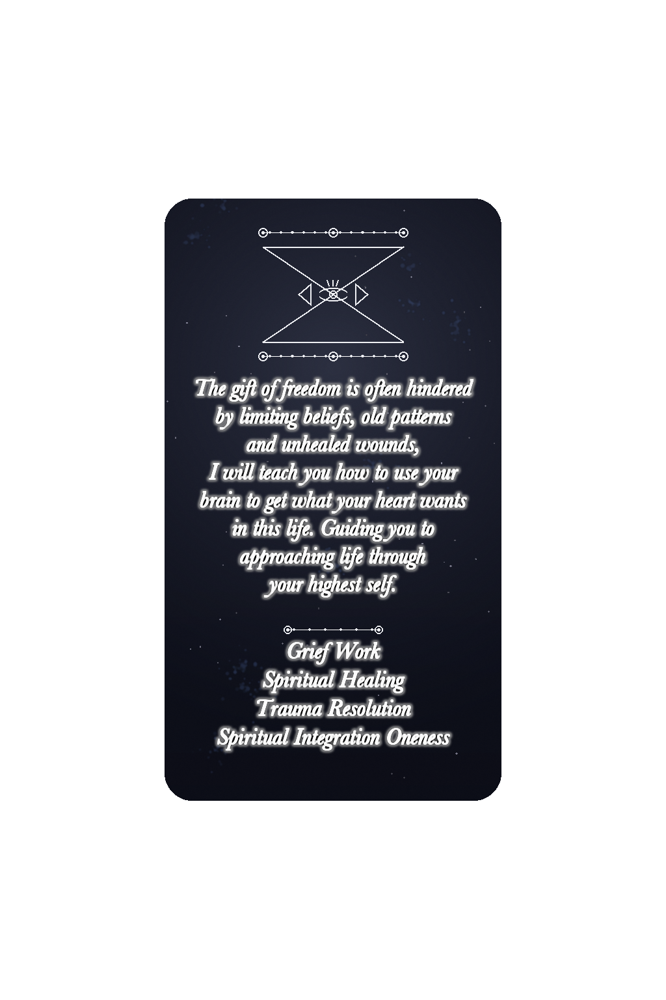

Joy Baumann
Healing Out of the Ordinary
A story of creativity, resilience, healing, and a life lived beyond convention.
About Joy
Her Story
Her life and work reflect a deeply personal journey shaped by creativity, courage, struggle, discovery, and healing. This space is dedicated to sharing her story, preserving her voice, and exploring the experiences that made her life so extraordinary.
Biography
Joy Baumann is a gifted healer with many years of experience in equine therapy, hemispheric integration therapy, and a variety of holistic healing practices. Her deep understanding of the interconnectedness of mind, body, and spirit allows her to guide clients on a transformative journey of self-discovery and healing.
In addition to her expertise in several healing modalities, Joy incorporates modern therapeutic techniques and specializes in creating a harmonious bond between humans and animals through her work in equine therapy. Her compassionate approach extends to clients of all kinds, helping them navigate challenges and access the tools needed for emotional, mental, and spiritual harmony.
Through her unique blend of ancient healing traditions and contemporary practices, Joy creates a safe, nurturing space where clients can explore their deepest truths, release limiting beliefs, and embrace their full potential — stepping into a life filled with clarity, purpose, and joy. She is based in the Los Angeles area and also offers remote services.
Moments & Milestones
The turning points and quiet discoveries that marked her journey, each one a step toward the woman she became.
Her Philosophy
A belief in healing as a practice of presence — approaching life, and helping others do the same, through the highest self.
Healing Out of the Ordinary

Kind Words
Experiences shared by those who have worked with Joy.
Chapter Two
Healing Out of the Ordinary
A story of creativity, resilience, healing, and a life lived beyond convention.
The Anthology of Unusual Presentations
Explore the creative work and legacy connected to this part of Joy’s story.
Visit anthologyofunusualpresentations.com